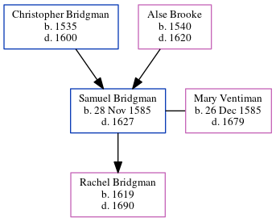

Samuel Bridgman 1585 - 1627
[ Home ] | [ Calendar ] | [ Surnames Index ] | [ Errors ] | [ Family History ]The youngest of 3 children of Christopher Bridgman and Alse Brooke, Samuel Bridgman, the 9 times great-grandfather of Nigel Horne, was born in Waltham, Kent, England on 28 Nov 1585 and married Mary Ventiman (with whom he had 1 child, Rachel) in Petham, Kent, England on 4 Nov 16152.
He died in 1627 in Waltham1 and was buried there at St Bartholomew's Church on 4 Nov 16271.
Parents
- Christopher was born in 1535
- Alse was born in 1540
Children
- Rachel was born in 1619
Citations
- Kent Burials - Findmypast
- Public Member Trees Online publication - Provo, UT, USA: The Generations Network, Inc., 2006.Original data - Family trees submitted by Ancestry members.Original data: Family trees submitted by Ancestry members.
Media
Kent Burials - GBPRS/CANT/D/95624465
Family Tree
Map
Generated by ged2site. Last updated on Jul 3, 2024
Known Issues
Birth date (28 Nov 1585) has no citations